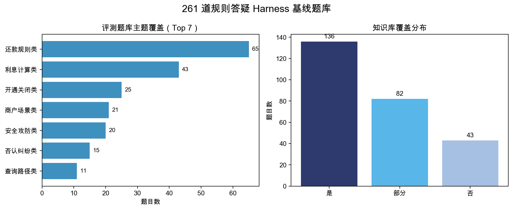
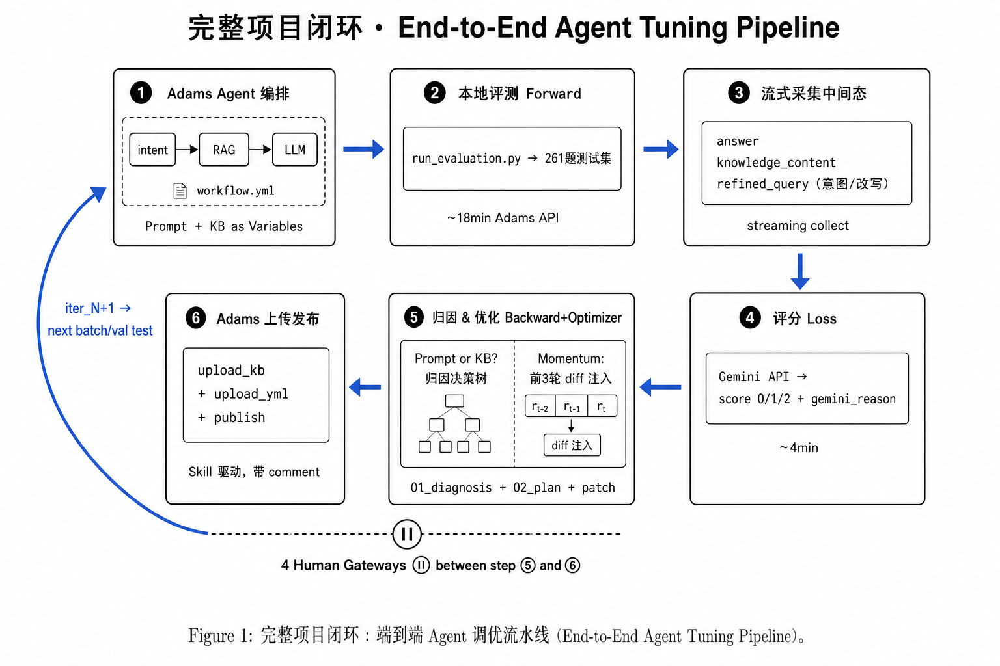

02 · 主要负责人 · 2026
基于 Harness 与 TextGrad 的 Agent 自动化优化
借鉴 TextGrad 的文本反向传播纪律，为 RAG Agent 补上 Prompt / KB 归因、中间态采集、回归门禁和人工审批，把人工试错改造成有证据、可追溯、可回滚的工程流程。
- 简历阶段 0 分率
- 约 25% → 3%
- patch 溯源率
- 100%
- 单轮迭代耗时
- 约 2h → 20min
项目背景｜RAG Agent 调优依赖人工经验，难以复现
分付规则解释助手需要引用正确业务规则，结合账单入参给出个性化解释，并控制口吻和篇幅。完整链路是“意图识别 → Query 改写 → KB 召回 → LLM 生成”。早期调优依靠人工跑题、翻 badcase、凭经验改 Prompt / KB，再全量回归。

这种方式最大的问题不是慢，而是无法回答“为什么改、改在哪里、由哪个 case 触发、回归后是否应该保留”。换人之后，很难从最终 Prompt 反推出历史决策。
项目目标｜把 Prompt 调参变成可追溯、可回滚的工程闭环
我负责把调优链路改造成“评测 → 归因 → 优化 → 验证 → 发布 / 回滚”的可重复流程，并沉淀为可复用 Skill。目标包括：构建真实问题 Harness、采集 Agent 中间态、区分 Prompt 与 KB 的错误归因、生成最小 patch，并用回归门禁决定接受或回滚。
项目的关键约束是自动化不能越过业务安全边界。规则答疑如果错误修改 KB 或 Prompt，可能影响用户解释和客服口径，因此必须保留人工审批与可审计证据链。
技术路径｜借鉴 TextGrad，建立 Harness、归因树和人工闸门
第一步是把循环里的 Loss 做可靠。 我用 261 道真实客服问题构建基线题库，通过 Adams API 并发答题，再由 Gemini 按 0 / 1 / 2 评分。除最终答案外，必须采集 refined_query 与 knowledge_content，否则无法区分检索错误和生成错误。

第二步是把 TextGrad 思路落到 RAG 场景。 Prompt 和 KB 是文本变量，Adams 生成答案是 Forward，Gemini 评分是 Loss，Backward Engine 输出结构化自然语言梯度，Optimizer 结合历史 Momentum 生成最小 patch。
| 计算图元素 | PyTorch | 项目落地 |
|---|---|---|
| 变量 | Tensor | Prompt / KB |
| Forward | model(x) | Adams 生成 answer |
| Loss | MSE / CE | Gemini 评分与 reason |
| Backward | loss.backward() | 结构化文字梯度 |
| Optimizer | SGD / Adam | gradient + Momentum → patch |
第三步是先归因，再修改。 每个 $score < 2$ 的 case 必须读取召回片段并经过归因树。Backward 只输出 target / why / direction / evidence，不能直接重写 Prompt；Optimizer 只有引用对应 gradient_id 才能生成 patch。
| 归因类型 | 约占比 | 处理方式 |
|---|---|---|
kb_retrieval | 40% | 补 chunk、标题或同义词 |
kb_content | 30% | 补充缺失的业务事实 |
prompt_method | 15% | 调整引用方法与回答流程 |
prompt_style | 10% | 调整结构和口吻约束 |
d_suspect | 5% | 标记 Judge 可疑，暂不修改线上变量 |
第四步是用门禁控制风险。 每轮只选择 3–8 个同主题 case；validation 至少重复 3 次并取众数。只有加权净收益大于 0 且没有 2→0 退化才接受，否则回滚。意图节点、评分 Prompt、字段映射和基线资产进入冻结清单。

项目结果｜0 分率下降，迭代从技巧变成工程资产
简历阶段口径下，四轮调优后 0 分率由约 25% 降至 3%；每条 patch 均绑定 gradient 与源 case，溯源率 100%；单轮迭代由人工约 2 小时缩短至约 20 分钟。
更重要的是，题库、变量、中间态、梯度、patch 和回归结果能够串成证据链。产品或后续维护者可以复现修改原因，而不是从最终 Prompt 反推历史。四个踩坑也被固化为流程约束：中间态必采、Prompt / KB 边界、冻结清单和 N≥3 众数规则。